Sparse representation with the TQWT
Example illustrating sparse signal representation/approximation using the tunable Q-factor wavelet transform (TQWT). The first part: sparse signal representation (basis pursuit). The second part: sparse signal approximation (basis pursuit denoising).
Reference: 'Wavelet Transform with Tunable Q-Factor' https://eeweb.engineering.nyu.edu/iselesni/TQWT Ivan Selesnick selesi@nyu.edu NYU Tandon School of Engineering November 2010
Revised September 15, 2026 to include complex signals
Contents
- Miscellaneous
- Set example parameters
- Display signal
- Plot wavelets for several scales
- Plot wavelet at final level and low-pass scaling function
- Plot subbands
- Compute energy in each subband
- Sparse wavelet representation (Basis Pursuit)
- Compute cost function
- Display cost function versus iteration
- Plot sparse subbands
- Reconstruction error
- Compute energy in each subband
- Sparse wavelet approximation (Basis Pursuit Denoising)
- Compute cost function
- Display cost function versus
- Display test signal before and after denoising
- Plot sparse subbands
- Write information to file
Miscellaneous
clear
close all
Set example parameters
% Select one of the following lines Example_Num = 1; % Artificial signal % Example_Num = 2; % Speech waveform % Example_Num = 3; % Artificial complex-valued signal % Example_Num = 4; % Artificial complex-valued signal switch Example_Num case 1 % Set wavelet parameters Q = 3.5; r = 3.0; L = 20; % number of levels L1 = 6; x = test_signal(2); % Make test signal N = length(x); t = (0:N-1); % time axis fs = 1; % sampling frequency xlabel_txt = 'TIME (SAMPLES)'; A = 2; % Utility to save a figure to a PDF file FS = FigureSaver('figures/sparsity_demo1/'); case 2 % Set wavelet parameters Q = 3; r = 3; L = 23; L1 = 10; % Load speech signal x = load('speech2.txt'); fs = 16000; x = x(:)'; N = 2^11; % length(x) t = (0:N-1)/fs; % time axis xlabel_txt = 'TIME (SECONDS)'; A = 0.5; % Utility to save a figure to a PDF file FS = FigureSaver('figures/sparsity_demo2/'); case 3 % Set wavelet parameters Q = 1; r = 3.0; L = 9; % number of levels L1 = 1; x = test_signal(11); % Make test signal N = length(x); t = (0:N-1); % time axis fs = 1; % sampling frequency xlabel_txt = 'TIME (SAMPLES)'; A = 2; FS = FigureSaver('figures/sparsity_demo3/'); case 4 % Set wavelet parameters Q = 3; r = 3; L = 19; L1 = 10; x = test_signal(12); % Make test signal N = length(x); t = (0:N-1); % time axis fs = 1; % sampling frequency xlabel_txt = 'TIME (SAMPLES)'; A = 2; FS = FigureSaver('figures/sparsity_demo4/'); end beta = 2/(Q+1); alpha = 1-beta/r;
Display signal
figure(1), clf subplot(2,1,1) if isreal(x) plot(t,x) else plot(t, real(x), t, imag(x)) end title('TEST SIGNAL') ylim([-A A]) xlim([t(1) t(end)]) xlabel(xlabel_txt) % Verify perfect reconstruction w = tqwt_radix2(x, Q, r, L); y = itqwt_radix2(w, Q, r, N); fprintf('Reconstruction error = %4.3e\n', max(abs(y-x)))
Reconstruction error = 4.441e-16
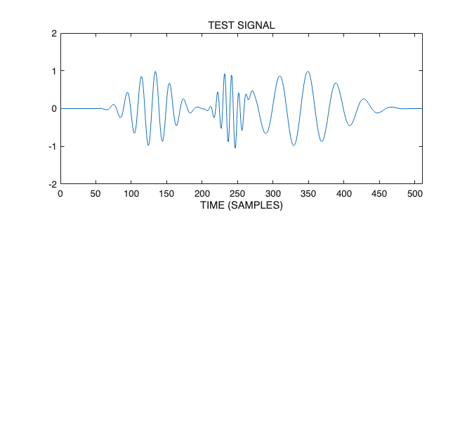
Plot wavelets for several scales
Verify that the wavelets look as expected
figure(2), clf N1 = 200; % Length of signal PlotWavelets(N1,Q,r,4, MaxLevels(Q, r, N1)); xlabel('TIME (SAMPLES)') orient tall FS.SavePDF_fill('wavelets')

Plot wavelet at final level and low-pass scaling function
wlets = ComputeWavelets(N,Q,r,L,'radix2'); % Compute wavelets figure(3), clf subplot(2,1,1) plot(t, wlets{L}) title(sprintf('WAVELET AT LEVEL %d',L)) xlim([0 N/fs]) ylim(1.2*(max(abs(wlets{L})))*[-1 1]) subplot(2,1,2) plot(t, wlets{L+1}) title(sprintf('LOW-PASS SCALING FUNCTION AT LEVEL %d',L)) xlim([0 N/fs]) xlabel(xlabel_txt)
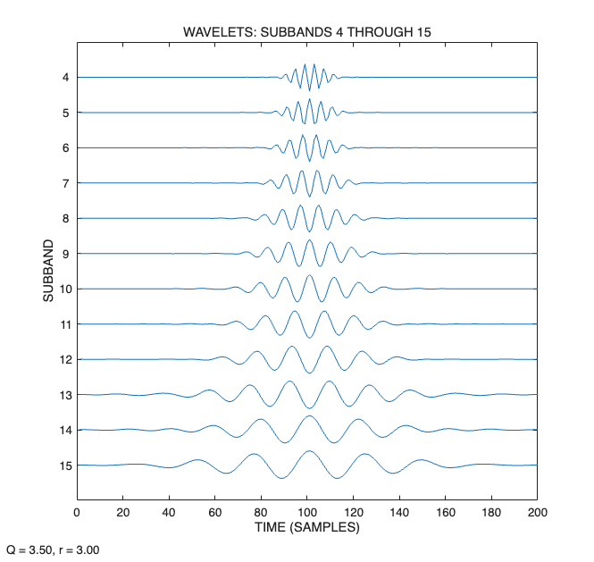
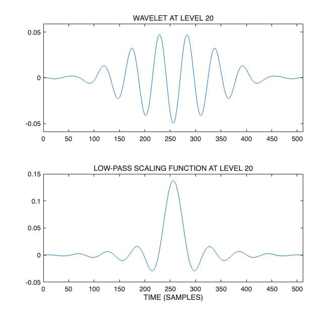
Plot subbands
figure(4), clf % PlotSubbands(x,w,Q,r,L1,L,fs,[],'stem'); PlotSubbands(x,w,Q,r,L1,L,fs,'E'); title('SUBBANDS') orient tall FS.SavePDF_fill('subbands')
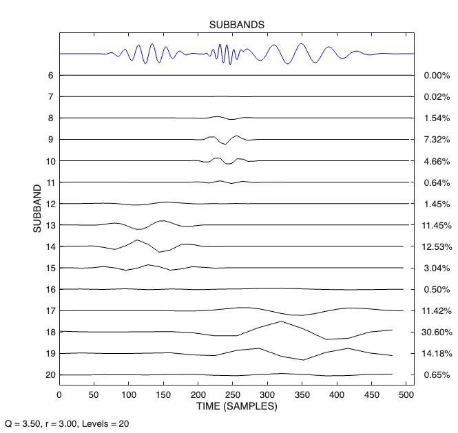
Compute energy in each subband
It can be useful to know how the energy of a signal is distributed across the subbands. We compute the energy in each subband and display using a bar graph. Because the transform has the Parseval property the distribution of the energy across the subbands reflects the frequency content of the signal.
figure(5)
clf
e = PlotEnergy(w);
FS.SavePDF('energy')
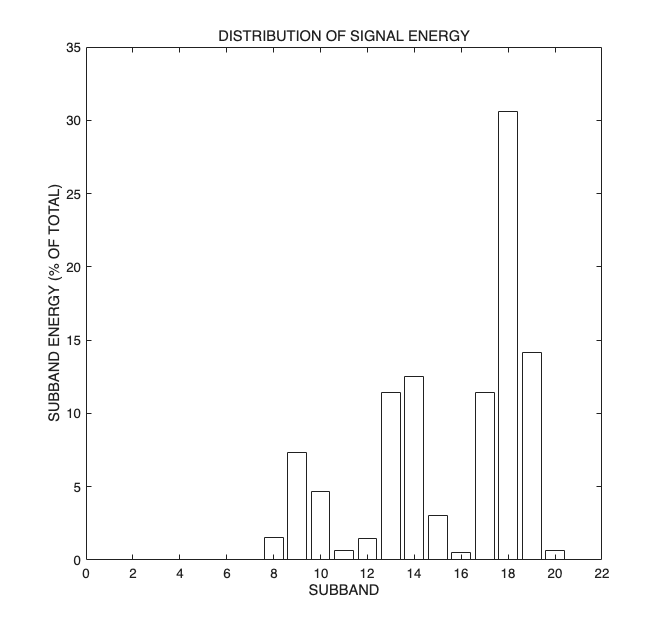
Sparse wavelet representation (Basis Pursuit)
Sparse signal representation with perfect reconstruction (Basis Pursuit). Use a variant of SALSA to minimize l1-norm of wavelet coefficients providing exact reconstruction.
now = ComputeNow(N,Q,r,L,'radix2'); lambda = now; % Regularization parameters mu = 2.0; % SALSA parameter Nit = 100; % Number of iterations [w2, costfn] = tqwt_bp(x, Q, r, L, lambda, mu, Nit); y = itqwt_radix2(w2, Q, r, N); err = x - y; rel_err = sqrt(mean(abs(err).^2))/sqrt(mean(abs(x).^2)); fprintf('Basis pursuit (BP) relative RMS reconstruction error = %4.3e\n',rel_err);
Basis pursuit (BP) relative RMS reconstruction error = 2.775e-16
Compute cost function
cost = 0; for j = 1:L+1 cost = cost + lambda(j)*sum(abs(w2{j})); end fprintf('BP objective function: %e\n', cost);
BP objective function: 2.221250e+01
Display cost function versus iteration
figure(6), clf it1 = 10; plot(it1:Nit, costfn(it1:Nit)); xlim([0 Nit]) title('SALSA COST FUNCTION (BASIS PURSUIT)') xlabel('ITERATION') FS.SavePDF('cost_function_bp') % check consistency between 'cost' and final value of 'costfn' fprintf('BP costfn(end) = %d\n', costfn(end))
BP costfn(end) = 2.221250e+01
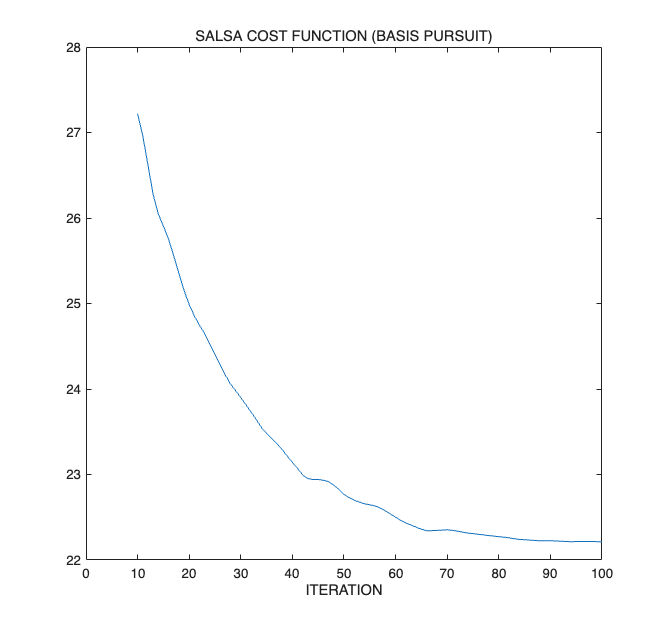
Plot sparse subbands
figure(7), clf % PlotSubbands(y,w2,Q,r,L1,L,fs,'E','stem'); PlotSubbands(y,w2,Q,r,L1,L,fs,'E'); title('SPARSE SUBBANDS (BASIS PURSUIT)') orient tall FS.SavePDF_fill('subbands_sparse_bp')
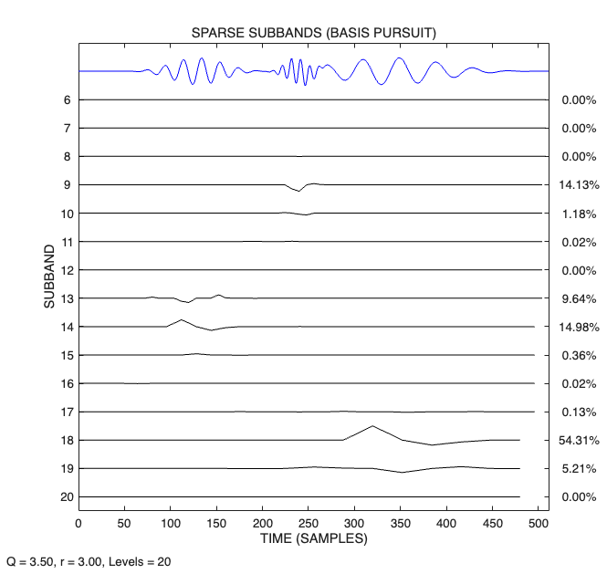
Reconstruction error
The reconstruction error is zero, which verifies that the sparse wavelet coefficients are a valid representation of the signal.
figure(8), clf subplot(2,1,1) if isreal(x) plot(t, x) else plot(t, real(x), t, imag(x)) end xlim([t(1) t(end)]) ylim([-A A]) title('TEST SIGNAL') subplot(2,1,2) if isreal(err) plot(t, err) else plot(t, real(err), t, imag(err)) end xlim([t(1) t(end)]) ylim([-A A]) title('RECONSTRUCTION ERROR (BASIS PURSUIT)') xlabel(xlabel_txt) FS.SavePDF('recon_error_bp')
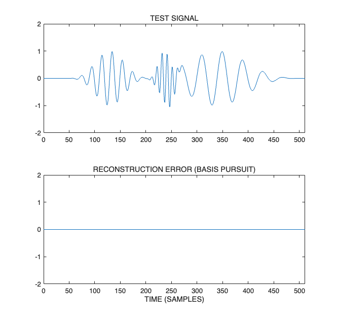
Compute energy in each subband
figure(9) clf e2 = PlotEnergy(w2); title('DISTRIBUTION OF SIGNAL ENERGY (BASIS PURSUIT)') FS.SavePDF('energy_bp')
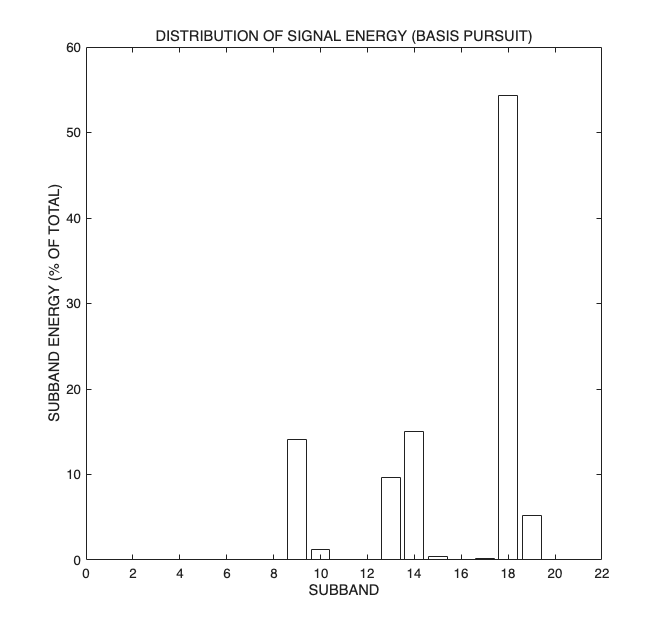
Sparse wavelet approximation (Basis Pursuit Denoising)
Sparse signal representation with l1-norm regularization (Basis Pursuit Denoising). Use SALSA to minimize function: sum((x-invTQWT(w)).^2) + sum(abs((lambda.*w))). This is useful when the signal is noisy.
lambda = 0.5*now; % Regularizaton parameter mu = 0.10; % SALSA parameter Nit = 100; % Number of iterations % Noisy signal if isreal(x) x2 = x + 0.1*randn(1,N); else x2 = x + 0.1 * complex(randn(1,N), randn(1,N)); end [wy, costfn] = tqwt_bpd(x2, Q, r, L, lambda, mu, Nit); y = itqwt_radix2(wy, Q, r, N);
Compute cost function
cost = sum(abs(x2 - y).^2); for j = 1:L+1 cost = cost + lambda(j)*sum(abs(wy{j})); end fprintf('BPD objective function: %e\n', cost);
BPD objective function: 1.494155e+01
Display cost function versus
figure(11), clf it1 = 10; plot(it1:Nit, costfn(it1:Nit)); xlim([0 Nit]) title('SALSA COST FUNCTION (BASIS PURSUIT DENOISING)') xlabel('ITERATION') FS.SavePDF('cost_function_bpd') % check consistency between 'cost' and final value of 'costfn' fprintf('BPD costfn(end) = %d\n', costfn(end))
BPD costfn(end) = 1.494155e+01
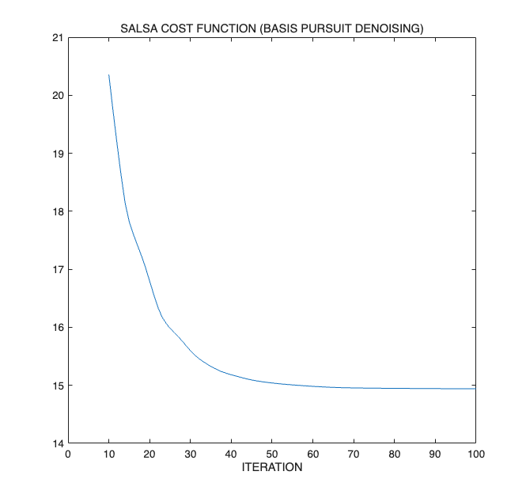
Display test signal before and after denoising
figure(20), clf subplot(3,1,1) if isreal(x2) plot(t, x2) else plot(t, real(x2), t, imag(x2)) end xlim([t(1) t(end)]) ylim([-A A]) title('NOISY TEST SIGNAL') xlabel(xlabel_txt) subplot(3,1,2) if isreal(y) plot(t, y) else plot(t, real(y), t, imag(y)) end xlim([t(1) t(end)]) ylim([-A A]) title('AFTER BASIS PURSUIT DENOISING') xlabel(xlabel_txt) % The residual is an estimate of the noise - it should look like pure noise res = x2 - y; subplot(3,1,3) if isreal(res) plot(t, res) else plot(t, real(res), t, imag(res)) end xlim([t(1) t(end)]) ylim([-A A]) title('RESIDUAL (BASIS PURSUIT DENOISING)') xlabel(xlabel_txt) FS.SavePDF_fill('signals_bpd')
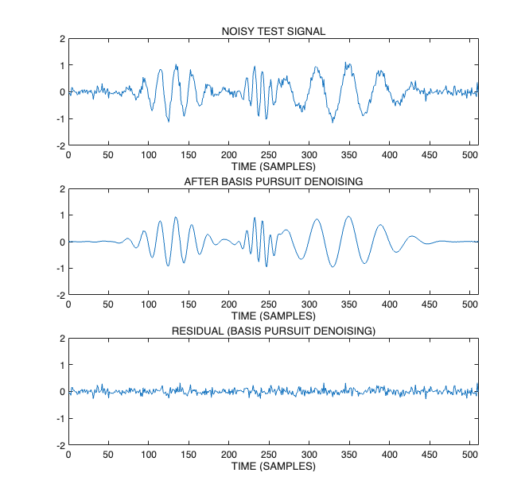
Plot sparse subbands
figure(10), clf % PlotSubbands(y,wy,Q,r,L1,L,fs,'E','stem'); PlotSubbands(y,wy,Q,r,L1,L,fs,'E'); title('SPARSE SUBBANDS (BASIS PURSUIT DENOISING)') orient tall FS.SavePDF_fill('subbands_sparse_bpd')

Write information to file
file_name = sprintf('figures/sparsity_demo%d/info.txt',Example_Num); fid = fopen(file_name,'w'); fprintf(fid,'TRANSFORM PARAMETERS:\n'); fprintf(fid,'\t Transform: tqwt_radix2.m\n'); fprintf(fid,'\t Q = %4.2f\n\t r = %4.2f\n\t levels = %d\n\n',Q,r,L); fprintf(fid,'SALSA PARAMETERS: \n'); fprintf(fid,'\t mu = %.2e\n\t iterations = %d\n', mu, Nit); fclose(fid);
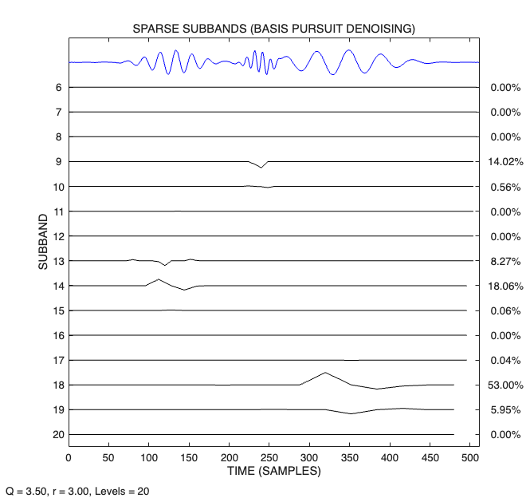